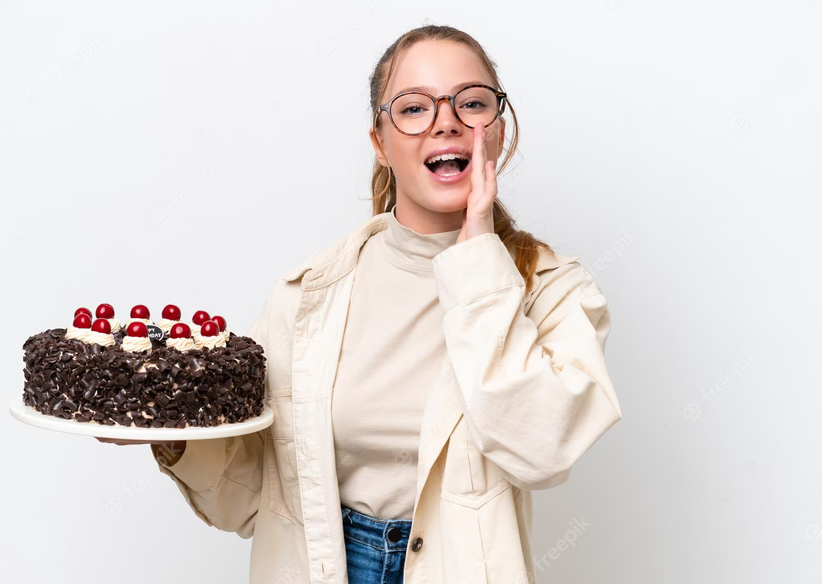

|  | I'm Inuli. fresh baked cake and more we've scooped up the most unique and stunning cake... I really love what I do and it gives me great pleasure to use my creative side to design completely individual and bespoke wedding and celebration cakes. There is nothing better than opening up a cake box and seeing the look of delight on a customer’s face when they see their cake for the first time or a bride letting you know that her wedding cake was exactly what she had wanted. |
I'm Inuli. fresh baked cake and more we've scooped up the most unique and stunning cake... I really love what I do and it gives me great pleasure to use my creative side to design completely individual and bespoke wedding and celebration cakes. There is nothing better than opening up a cake box and seeing the look of delight on a customer’s face when they see their cake for the first time or a bride letting you know that her wedding cake was exactly what she had wanted. |
Products & Services
 |
Madagascan vanilla cake is a delectable dessert that showcases the rich, aromatic flavors of vanilla sourced from Madagascar. This cake is known for its moist and tender texture, as well as its irresistible taste.
The key ingredient that sets Madagascan vanilla cake apart is the vanilla extract or vanilla bean sourced from Madagascar. Madagascar is renowned for producing some of the world's finest and most flavorful vanilla beans, which are highly prized for their intense and sweet aroma. The vanilla is incorporated into the cake batter, infusing it with a distinct and heavenly vanilla fragrance. |
 |
Rich Chocolate Fudge Cake is a decadent and indulgent dessert that is beloved by chocolate lovers around the world. This cake is known for its intense chocolate flavor, moist and dense texture, and a
luscious fudge-like consistency.
The base of the cake is typically made from a rich chocolate batter, which is achieved by using high-quality cocoa powder or melted dark chocolate. The cocoa powder or chocolate is mixed with flour, sugar, eggs, butter, and other ingredients to create a smooth and velvety batter. Sometimes, additional ingredients like coffee or vanilla extract are added to enhance the chocolate flavor. |
 |
Chocolate and Salted Caramel Cake is a delectable dessert that combines rich chocolate flavors with a contrasting touch of sweet and salty caramel. This cake is a true indulgence for chocolate lovers and those
with a sweet tooth.
The base of the cake is a moist and decadent chocolate sponge, made with high-quality cocoa powder and rich dark chocolate. The sponge is light and fluffy, yet dense enough to hold up the layers and toppings. |
 |
White Chocolate Cake is a delightful dessert that showcases the creamy and sweet flavors of white chocolate. It is a perfect choice for those who love the smooth and luxurious taste of white chocolate and desire a
lighter alternative to traditional chocolate cake.
The cake itself is a tender and moist sponge, infused with the essence of white chocolate. The batter is prepared using high-quality white chocolate, which is melted and incorporated into the mixture. This results in a delicate and buttery cake with a subtle white chocolate flavor that shines through in every bite. |
Contact Us
leave us a message
About
Welcome to my cake business portfolio! I am a passionate and experienced cake designer dedicated to creating extraordinary and delectable cakes for all occasions. With a keen eye for detail and a love for artistic expression, I strive to bring your cake
dreams to life.
In my portfolio, you will find a collection of my finest cake designs that showcase my diverse range of skills and expertise. Each cake is a unique masterpiece, crafted with precision and care to ensure an unforgettable experience for you and your guests.
From elegant wedding cakes adorned with delicate sugar flowers to whimsical birthday cakes featuring intricate fondant designs, my portfolio highlights the versatility and creativity that I bring to every project. Whether you desire a classic and timeless cake or a
modern and innovative design, I am committed to exceeding your expectations.
My portfolio also showcases my ability to work with various themes and styles. From elaborate tiered cakes to custom-shaped sculpted creations, I can bring any idea to life. Whether it's a romantic garden-themed wedding, a magical fairytale-inspired birthday party,
or a sophisticated corporate event, I can create a cake that perfectly complements the ambiance and vision of your special occasion.
Quality and taste are equally important to me. Alongside stunning designs, my cakes are made with the finest ingredients, ensuring a delicious and memorable culinary experience for your guests. From classic flavors like vanilla and chocolate to unique combinations
and dietary restrictions, I offer a wide array of flavors and fillings to suit your preferences.
Thank you for considering my cake design services. I am thrilled to be a part of your celebrations and look forward to creating a cake that not only looks spectacular but also tastes divine. Please take a moment to browse through my portfolio and let the artistry
and craftsmanship speak for itself. I am confident that my cakes will leave a lasting impression and become the centerpiece of your special day.
Projects & Achievements
Project 1: Elegant Wedding Cake
For a high-profile wedding, I designed an elegant and sophisticated six-tier wedding cake. The cake featured delicate handcrafted sugar flowers in various shades of white and blush, meticulously arranged to create a cascading effect. The tiers were adorned with intricate lace patterns and edible pearl accents, adding a touch of luxury to the overall design. This project showcased my attention to detail and ability to create visually stunning cakes for special occasions.
Achievement 1: Featured in a Wedding Magazine
The elegant wedding cake I designed received recognition in a prestigious wedding magazine. It was featured as a centerpiece in an article highlighting the latest trends in wedding cake designs. This achievement not only validated my creative skills but also brought attention to my work, attracting new clients and opportunities.
Project 2: Whimsical Children's Birthday Cake
I was commissioned to create a whimsical birthday cake for a child's themed party. Inspired by the child's favorite storybook characters, I designed a three-tier cake that resembled a fairytale castle. The cake was decorated with vibrant fondant details, including turrets, windows, and a drawbridge. The colors were carefully selected to match the party's theme, creating a magical and enchanting atmosphere.
Achievement 2: Winner of a National Cake Decorating Competition
I participated in a national cake decorating competition and secured first place with my whimsical children's birthday cake design. The judges praised the creativity and craftsmanship involved in bringing the storybook characters to life. This achievement not only boosted my reputation as a skilled cake designer but also opened doors to collaborate with renowned event planners and expand my clientele.
Project 3: Customized Anniversary Cake
To commemorate a couple's 50th wedding anniversary, I created a customized cake that celebrated their journey through the years. The cake design incorporated elements from their wedding day, such as their initials and the same floral motifs used in their original wedding cake. It was a heartfelt tribute to their enduring love and served as a centerpiece during their anniversary celebration.
Achievement 3: Featured on a Television Show
The customized anniversary cake I designed caught the attention of a popular television show dedicated to showcasing extraordinary talents in the culinary world. I was invited to appear on the show, where I shared the story behind the cake and demonstrated my decorating techniques. The exposure on national television significantly elevated my profile and increased the demand for my services.These projects and achievements in my portfolio demonstrate my ability to create exquisite, personalized cakes for various occasions. Whether it's a grand wedding, a whimsical children's party, or a meaningful anniversary, I bring creativity, attention to detail, and a touch of magic to every cake I design.